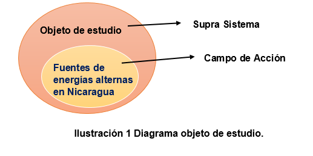

Las energías alternas, conocidas como fuentes primarias son las que se extraen de la naturaleza, sin procesos que las transformen, como lo son; la hidráulica, eólica, solar, geotérmica, biomasa, etc.
Nicaragua según la fundación The Climate Reality Project –fundada en 2006 por el ex vicepresidente de Estados Unidos, Al Gore es una de las tres naciones junto a Suecia y Costa Rica, que están marcando a nivel mundial la ruta a seguir en este campo, que constituye la principal forma de reducir las emisiones de gases de efecto invernadero.
Nicaragua tiene un potencial en la generación de energías renovables está entre los 4,500 y 5,000 megavatios; ello de acuerdo al cálculo que realizó en el 2014 la Agencia Internacional para las Energías Renovables con base en las fuentes hidroeléctricas, geotérmicas, eólicas, solares y de biomasa disponibles, según, La coordinadora de la oficina de la Asociación Renovables Nicaragua.
En 2007, la generación de energías renovables la representaba tan solo el 27.50% y pasó al 52.40% en el 2014, el actual gobierno de Nicaragua se ha planteado como meta alcanzar el 90% para el año 2020 con proyectos de inversión pública, privada y mixta.
La matriz energética de Nicaragua y los sistemas actuales de Gestión de Energías Alternas para el control de las tarifas energéticas en la población nicaragüense.
Fuenetes de Energias Alternas en Nicaragua
En el presente trabajo tiene como finalidad el diseño de un “Sistema de gestión de Fuentes de Energías Alternas en Nicaragua”.
A fin de promover el aprovechamiento de los recursos renovables del país de modo que se alcance un aumento de a lo sumo un 45% de plantas generadoras de energía a través de fuentes renovables, con respecto al año 2018 en el que se contaba con un 34% de estas plantas, de las 45 plantas generadoras de energía existentes en el país; a partir del 1 de mayo del 2021.
Para esto se realizó un análisis para determinación del problema el cual es de gran importancia para llegar a plantear los objetivos y alternativas de solución. En donde se utilizaron herramientas de investigación como tormenta de ideas, Trilogía de Hall, árbol de problemas, árbol de objetivos, definición Raíz, así como la aplicación del Esquema Planificación Sistemática (PLASIS).
Una vez que se realizó el análisis, se procedió a encontrar el sistema óptimo con la ayuda de la matriz de alternativas vs objetivos, además se realizó el diagrama de Gantt el cual es la planificación de ejecución del proyecto es decir de todas las actividades que deben cumplirse, así como el tiempo de duración de las mismas en el Sistema.
Obteniendo como sistema optimo el conjunto de alternativas O.1.A.1; O.2.A.3; O.3.A.5; O.4.A.7; O.5.A.8; O.6.A.13; O.7.A.15; O.8.A.16; O.9.A.20; O.10.A.21; O.11.A.24; O.12.A.25; O.13.A.29), con un costo de C$591,359,504.20.